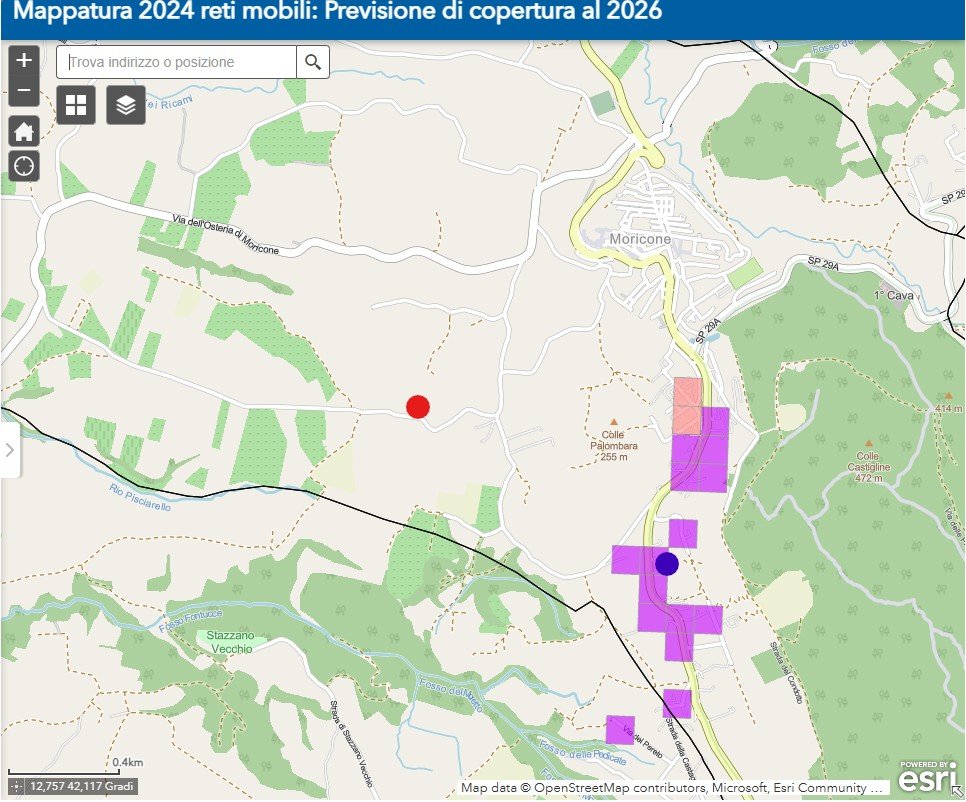
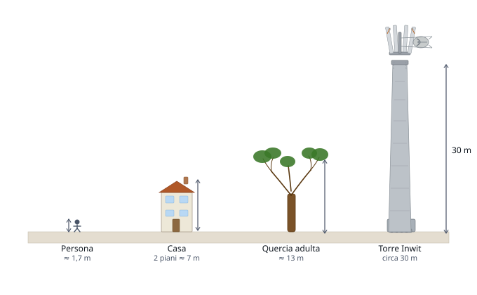
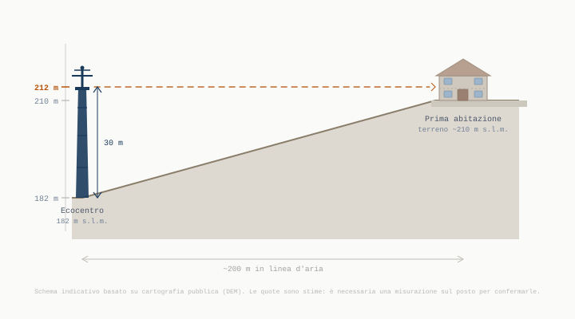

La questione
Come è stata presa la decisione e cosa non risulta agli atti
Il 5 marzo 2026 il Consiglio Comunale di Moricone ha approvato la delibera n. 9/2026. La delibera individua l'area dell'ecocentro come sito per una torre multi-gestore nell'ambito del Piano Italia 5G (codice NIN51494). Il piano non richiede di coprire il centro abitato: richiede di coprire specifiche aree lungo la SS636 e nelle zone rurali circostanti, già identificate nelle mappe ufficiali Infratel.
Il Comune ha scelto l'area dell'ecocentro
Il 5 marzo 2026 il Consiglio Comunale di Moricone ha individuato l'area dell'ecocentro comunale come sito per una torre che ospiterà antenne per la copertura dati della rete mobile di nuova generazione.
Il Comune deve rispondere al Piano Italia 5G
Il progetto nasce dal Piano Italia 5G, un programma nazionale finanziato con fondi PNRR che prevede la copertura delle zone dove oggi il segnale mobile è assente o insufficiente. Le aree da coprire sono stabilite a livello nazionale e i Comuni coinvolti sono chiamati a consentire la realizzazione delle infrastrutture necessarie.
Le aree da coprire sono già definite
Il piano non richiede di coprire genericamente il centro abitato, ma specifiche aree individuate nelle mappe nazionali delle "zone bianche". Nel caso di Moricone queste aree si trovano lungo la SS636 e nelle zone rurali circostanti.

Il sito scelto si trova più in basso rispetto alle aree da coprire
▼L'area dell'ecocentro si trova a una quota altimetrica più bassa rispetto alle zone che il piano deve servire. Il fatto che la torre sia in una posizione più bassa rispetto alla zona da coprire richiede un'altezza minima di almeno 30 metri.


Il territorio intorno a Moricone ha una morfologia precisa: l'area dell'ecocentro è collocata a quota 182 metri sul livello del mare, mentre le zone bianche da coprire lungo la SS636 si trovano tra 259 e 287 metri. Una torre da 30 metri installata all'ecocentro avrebbe la cima a circa 212 metri — significativamente più bassa delle aree che deve coprire.
Quando si progettano reti mobili, la posizione della torre rispetto al territorio è un elemento tecnico fondamentale: il segnale radio si propaga più efficacemente quando l'antenna si trova in posizione dominante rispetto all'area da coprire. Se l'infrastruttura viene collocata in una posizione più bassa, possono essere necessarie configurazioni tecniche diverse — inclusa un'altezza della struttura superiore a quella inizialmente comunicata.
L'altezza effettiva necessaria emerge dalla simulazione radio professionale. Al momento della delibera del 5 marzo 2026, quella simulazione non risultava depositata agli atti.
La torre è molto vicina alle abitazioni
▼Nel sito individuato, la torre sorge a poche centinaia di metri dalle abitazioni presenti nell'area.

La linea arancione tratteggiata indica la quota della cima dell'antenna (212 m s.l.m.). Secondo le carte pubbliche disponibili, il terreno della prima abitazione più vicina si trova a circa 210 m s.l.m. — due metri più in basso della cima della torre. La cima dell'antenna potrebbe quindi trovarsi all'altezza del piano terra di quella casa.
In contesti collinari come quello di Moricone, quando una torre viene collocata in una posizione più bassa rispetto alle abitazioni vicine, alcune antenne possono trovarsi alla stessa quota visiva delle case o in diretto allineamento con esse.
Secondo le carte pubbliche disponibili (DEM), il terreno della prima abitazione più vicina si trova a circa 210 metri sul livello del mare: due metri più in basso della cima stimata della torre. La cima dell'antenna potrebbe quindi trovarsi all'altezza del piano terra di quella casa. Si tratta di una stima da cartografia pubblica che necessita di verifica con misurazione sul posto.
Stima basata su cartografia pubblica (DEM). Schema indicativo, scala verticale adattata per leggibilità.
Il Comune ha descritto il sito come "area a servizi"
▼Nel verbale del Consiglio Comunale del 5 marzo 2026 il Sindaco ha definito l'area dell'ecocentro "di fatto un'area a servizi". La perizia di stima redatta dall'Ufficio Tecnico Comunale il 18 febbraio 2026 classifica invece la stessa area come Zona E – Agricola, Sottozona E1 – Agricola Normale, ai sensi del PRG approvato con DGR Lazio n. 161 del 31/03/2006. Le due descrizioni provengono da atti dello stesso Comune.
Nel verbale del Consiglio Comunale del 5 marzo 2026 il Sindaco ha definito l'area dell'ecocentro "di fatto un'area a servizi". La perizia di stima redatta dall'Ufficio Tecnico Comunale il 18 febbraio 2026 — resa pubblica dalla testata Tiburno TV il 14 aprile 2026 e non trasmessa in risposta alle richieste formali di accesso agli atti — classifica invece la stessa area come Zona E – Agricola, Sottozona E1 – Agricola Normale, ai sensi del PRG approvato con DGR Lazio n. 161 del 31/03/2006.
Le due descrizioni provengono da atti dello stesso Comune. Una è nel verbale consiliare. L'altra è nella perizia firmata dal Responsabile dell'Ufficio Tecnico.
Nota: la classificazione in zona agricola non rende illegittima l'installazione — il D.Lgs. 259/2003 consente le stazioni radio base in qualsiasi zona urbanistica. La contraddizione documentata è tra la descrizione del Sindaco nel verbale e la classificazione nei propri atti tecnici.
Non è stato valutato un sito alternativo
La scelta di un sito per una torre di telecomunicazioni non è normalmente unica. Valutare più posizioni possibili permette di individuare quella che garantisce la copertura richiesta con il miglior equilibrio tra esigenze tecniche e caratteristiche del territorio. Nella risposta alla richiesta di accesso agli atti (prot. n. 2106 del 8 aprile 2026) il Comune ha dichiarato che nessun sito alternativo è stato preso in considerazione.
Le verifiche tecniche sul sito non risultano agli atti
▼Per progettare una rete mobile è necessario realizzare simulazioni radio che mostrano come il segnale si propagherà nel territorio. Questi dati permettono di verificare se il sito scelto è in grado di coprire le aree previste dal piano. Nella risposta alla richiesta di accesso agli atti (prot. n. 2106 del 8 aprile 2026) il Comune ha confermato che la simulazione non era disponibile agli atti al momento della delibera.
Prima della realizzazione di una nuova infrastruttura di telecomunicazione viene normalmente prodotta una simulazione radio: un'analisi tecnica che mostra come il segnale si propagherà nel territorio tenendo conto dell'altitudine del sito, della conformazione del terreno, degli ostacoli naturali e della posizione delle aree da coprire.
La simulazione serve a verificare se il sito individuato è in grado di garantire la copertura prevista dal piano e — fatto non secondario — a determinare l'altezza effettiva necessaria per la struttura.
Nella risposta alla richiesta di accesso agli atti (prot. n. 2106 del 8 aprile 2026) il Comune ha confermato che questa simulazione non era disponibile agli atti al momento della delibera. Il Comune ha approvato l'area e autorizzato la firma del contratto prima di sapere se il sito fosse tecnicamente idoneo e a quale altezza dovesse essere costruita la torre.
Chi abita vicino alla torre non è stato informato prima
▼Una torre nasce per ospitare un operatore. Nel tempo può diventarne un polo per molti. Chi abita nelle vicinanze ha tutto l'interesse a saperlo prima che il contratto venga firmato. Nel verbale del Consiglio Comunale del 5 marzo 2026 il Sindaco ha annunciato che "a breve verrà promosso un incontro pubblico". Al 1° giugno 2026, data dell'autorizzazione, quell'incontro non risulta mai convocato.
Il modello di business di Inwit si chiama co-location: sulla stessa torre possono installarsi nel tempo le antenne di operatori diversi. È un sistema razionale — riduce il numero di infrastrutture sul territorio — ma ha una conseguenza concreta: una torre ben posizionata, ottimizzata per coprire un'intera area, diventa automaticamente attrattiva per operatori aggiuntivi nel tempo.
Chi abita a 200 metri dall'ecocentro avrebbe posto questa domanda con naturalezza, se fosse stato coinvolto prima della delibera: "Quante antenne ci saranno su quella torre tra cinque anni?"
Una domanda posta prima della firma si traduce in clausole contrattuali precise: limite al numero di operatori, obbligo di nuova valutazione tecnica ad ogni aggiunta, soglie parametriche che il Comune controlla. Posta dopo la firma, non ha risposta certa.
Non è stata esplorata l'opzione di un terreno privato
▼Per realizzare una infrastruttura di telecomunicazione non è necessario che il terreno sia di proprietà del Comune. La delibera n. 9/2026 non documenta una valutazione comparativa tra terreno comunale e terreni privati disponibili nel territorio.
Nel processo di selezione del sito può sembrare naturale preferire un terreno comunale. In realtà è importante distinguere due ruoli distinti che il Comune esercita indipendentemente l'uno dall'altro.
Come proprietario del terreno, il Comune negozia le condizioni del contratto di locazione: durata, canone, clausole.
Come autorità regolatoria, il Comune mantiene il potere di autorizzare l'opera e di imporre condizioni vincolanti su qualunque sito del territorio comunale — pubblico o privato. Altezza della struttura, criteri paesaggistici, co-location tra operatori, monitoraggi ambientali: tutto questo deriva dal potere regolatorio dell'amministrazione, non dalla proprietà del terreno.
La delibera n. 9/2026 non documenta una valutazione comparativa tra il terreno comunale dell'ecocentro e terreni privati disponibili nel territorio.
Il contratto non prevede condizioni tecniche definite
Quando viene realizzata una infrastruttura di telecomunicazione, il progetto può prevedere condizioni tecniche e urbanistiche definite con chiarezza. Il contratto approvato con la delibera n. 9/2026 autorizza "qualunque tecnologia esistente o futura" senza specificare parametri tecnici vincolanti sull'altezza della struttura o sul numero di operatori ospitabili.
Il documento tecnico raccoglie dati, fonti e analisi
L'analisi tecnica utilizza dati pubblici, cartografie ufficiali e riferimenti normativi per ricostruire il contesto del progetto.
Scarica il documento completo (PDF)Gli atti pubblici citati in questa pagina sono disponibili nella sezione Documenti →